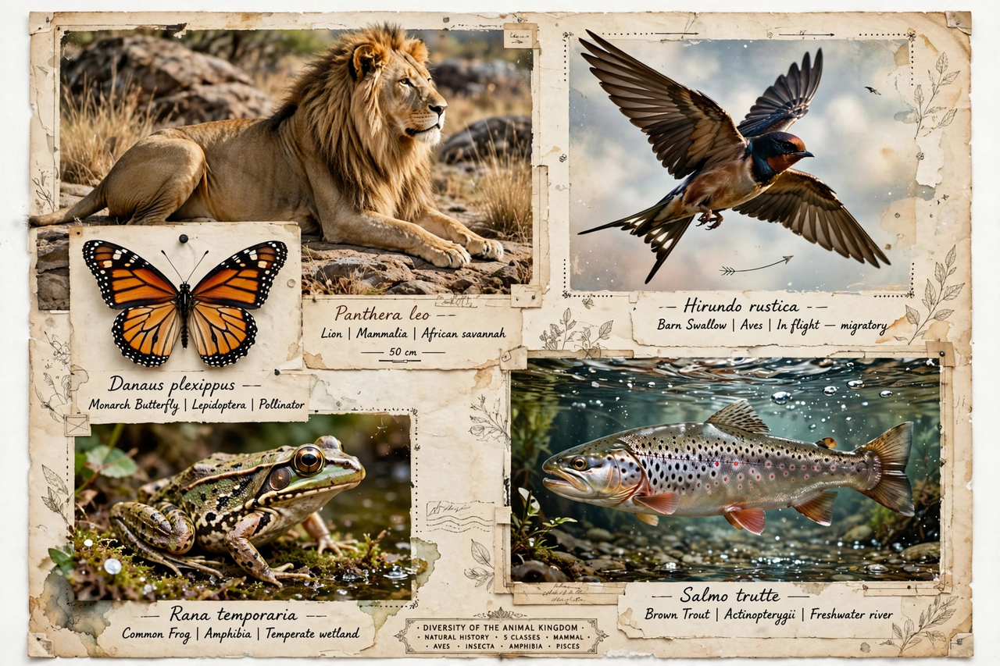

Animalia
Kingdom of animals in Wikispecies
Animalia is the taxonomic kingdom of the animals. Its Wikispecies page gives the taxon's classification (above it, Eukaryota), its name and authority (Linnaeus, 1758), and a long list of its phyla — including Chordata, Arthropoda, Mollusca, Annelida, Cnidaria, Echinodermata and Porifera — each linking to its own taxon page, down eventually to individual species.

[Image: Collage of animals representing the kingdom's diversity]
Classification
Superregnum: Eukaryota. Regnum: Animalia. Subregna include Eumetazoa and related groupings; the page follows the classification used by Wikispecies editors with references to taxonomic databases.
Vernacular names
The page lists the name 'animals' in many languages.